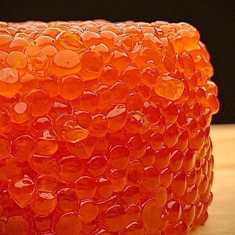
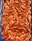
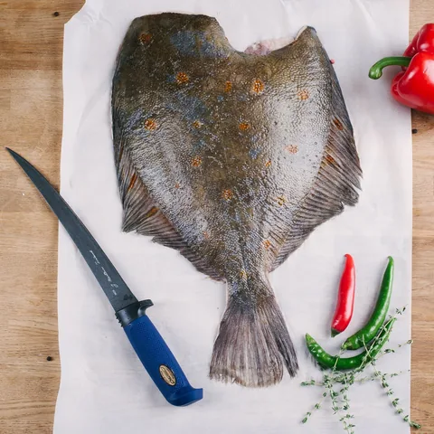
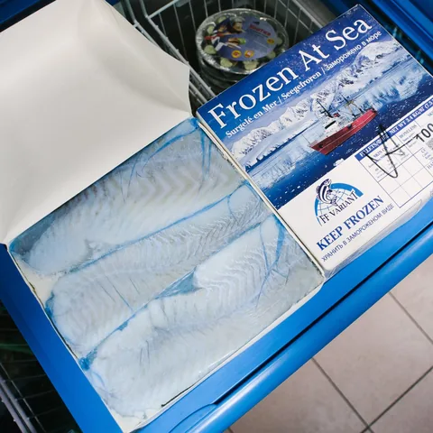
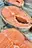
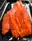
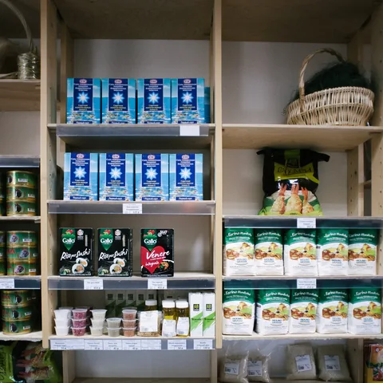
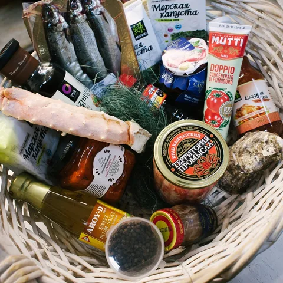
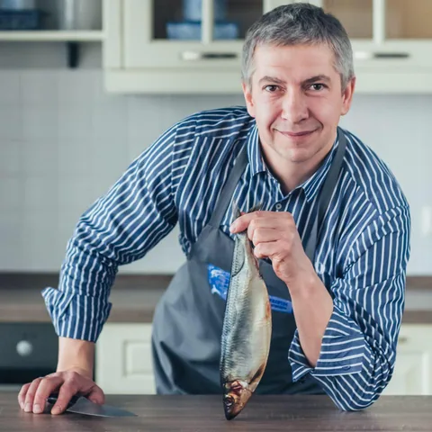

Чёрная икра
6 000 ₽ за 50 гОсетровая, забойная, высшего качества
Переключайте записи кнопками или клавишами со стрелками влево и вправо.
7 разделов · 115 позиций







Осетровая, забойная, высшего качества
Магадан
В/м — варёно-мороженый продукт
Камчатка
Мурманск, судовая заморозка, глазировка 0 %
Пилим сами, глазировка 0 %
Атлантическая. Солим сами, без консервантов и созревателей

Приготовить по рецепту Филе трески в каталогеЕго не нужно обваливать в муке и жарить в кляре. Его даже не нужно солить. Просто немного прогреть на растительном масле на слабом огне без крышки. Буквально три-четыре минуты.

Москва, ул. Строителей, д. 7, корп. 1. Метро «Вавиловская» и «Университет».
Ежедневно с 11:00 до 20:00

О нас
«Рыбная лавка капитана Селедкина» — небольшой магазин в нескольких минутах ходьбы от метро «Вавиловская».
Казалось бы, обычная торговая точка, но нас уже знают не только жители окрестных домов — к нам приезжают из других районов Москвы, а потом благодарят у себя в блогах.